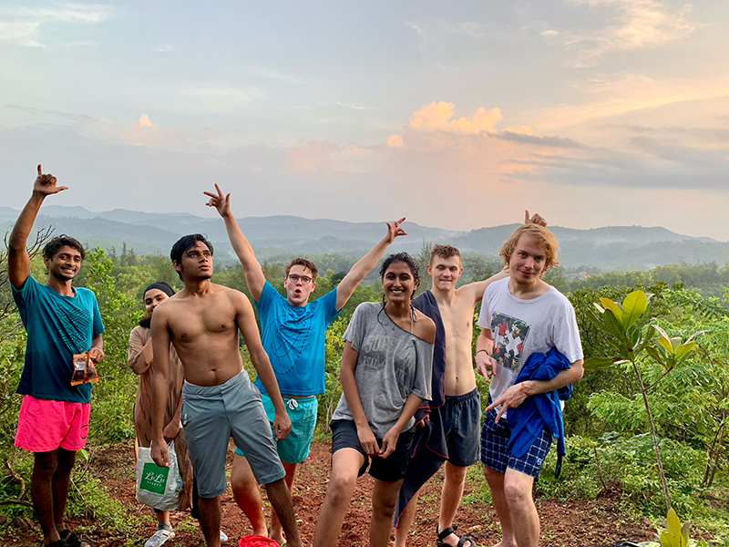
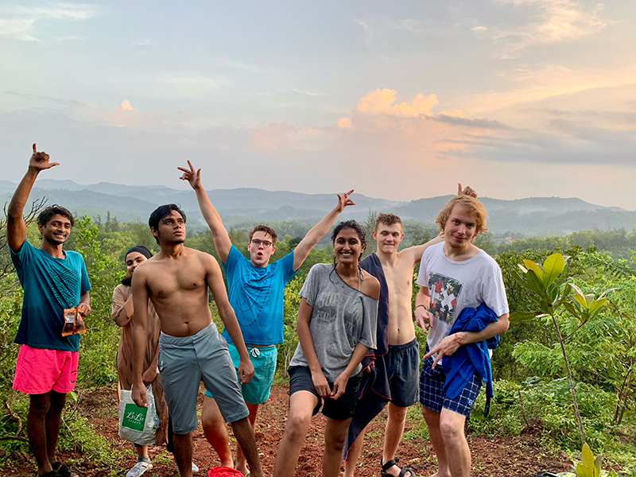

My Journey
A story of exploration, failures, and a deep-rooted commitment to purity.
A story of exploration, failures, and a deep-rooted commitment to purity.
I graduated in 2019 from Christ University, Bangalore, and soon found myself backpacking across Himachal, Uttarakhand, Karnataka & Goa. My first real experience with farming came at Varanashi Organic Farms near Mangalore, where I worked closely with the land, experienced clean eating, and embraced the rhythm of farm life.
 

When the pandemic hit, I joined the family business, but something was missing. I turned to wellness, not as a business idea, but as a personal necessity. My bathroom became a mini-lab for experiments.
As I sourced organic Amla & Moringa, I realized how flooded the market was with similar products. Despite maintaining the highest quality, I lacked a strong differentiator.
Unlike herbs and cosmetics, almond oil was singular and timeless. It didn’t need a complicated value proposition. It just needed to be the finest in its purest form.